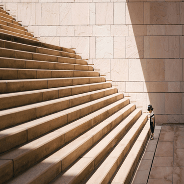
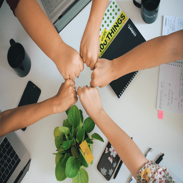
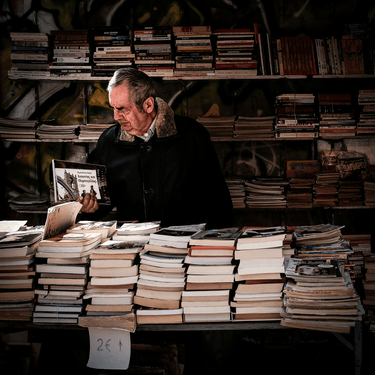
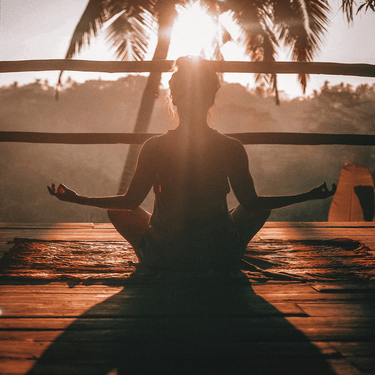

-
Фритрек и нулевой спринт: Подготовка к работе
Anticipation
Это было самое начало пути. На этом этапе важно было проникнуться основами и настроиться на учёбу. И, возможно, подумать, как новые знания могут повлиять на ваше будущее.
Я хорошо помню тот день, когда сделала первые шаги в обучении. Всё казалось новым и немного пугающим, но в то же время невероятно вдохновляющим. Я чувствовала, что стою на пороге чего-то важного, что эти знания откроют передо мной новые возможности. Первые темы были как фундамент — простые, но крайне значимые. Я старалась впитывать каждую деталь, представляя, как смогу применить это в будущем. Были моменты сомнений, но они быстро сменялись радостью от маленьких побед: решённой задачи, понятой концепции, осознания того, что я расту.
-
1 спринт: Я — чистый лист
At lastНа первых этапах мы работали со страхами и сомнениями, которые часто испытывают новички. Один из них — страх перед чистым листом. Это, конечно же, намного сложнее, чем боязнь куска бумаги. Часто за этим ощущением скрываются более глубокие вопросы: с чего начать? а вдруг будет слишком сложно? что, если я не справлюсь?
Помню, как в первый день спринта я сидела перед экраном, чувствуя, как нарастает волнение. Чистый лист в проекте казался огромным и пугающим — словно стоишь у подножия горы, не зная, с какой стороны начать подъем. В голове крутились вопросы: «А вдруг я не успею? Смогу ли разобраться в задачах? Что, если моих знаний окажется недостаточно?»Теперь, оглядываясь назад, понимаю: самый сложный момент — это всегда начало. Но стоит его преодолеть, и путь становится яснее. Первый спринт научил меня, что даже самые большие проекты состоят из маленьких шагов, а сомнения — это просто часть роста.
-
1 спринт: А если не получится?
Self-confidenceПервый проект — позади! Но это всё ещё самое начало пути. Радость могла быстро померкнуть и смениться ожиданием провала. Или вы, наоборот, могли вдохновиться успехами и поверить в себя.
Первый спринт завершён — это смесь гордости и лёгкого волнения. Помню, как в начале казалось, что всё слишком сложно, но шаг за шагом задачи становились понятнее. Самым радостным моментом было увидеть результат своей работы: пусть небольшой, но уже реальный. Были и сомнения, особенно когда что-то не получалось с первого раза, но поддержка команды или осознание того, что ошибки — это часть обучения, помогали двигаться вперёд.
-
2 спринт: Погоня за идеалом
PassionНа этом этапе вы уже достаточно разбирались в основах вёрстки, чтобы понять, как много ещё впереди. Вы могли попытаться погнаться за идеалом и понять, что он недостижим. А, может, вы вовсе и не подвержены перфекционизму и вместо того, чтобы сделать идеально, старались просто сделать.
Начало второго спринта стало для меня моментом осознания: вёрстка — это не просто код и теги, а целый мир, где каждая деталь важна. Были моменты, когда хотелось добиться совершенства, но вместо этого я училась принимать “достаточно хорошо”. Сейчас, оглядываясь назад, я понимаю, что второй спринт научил меня не только техническим приёмам, но и важному умению — двигаться вперёд, даже когда результат далёк от идеала. Главное — не останавливаться и продолжать пробовать.
-
2 спринт: О тех, кто рядом
ColleaguesВсё это время вы были не одиноки (хотя, возможно, иногда и чувствовали, что одни против целого мира). Вас окружали одногруппники, команда сопровождения и просто близкие люди, которым можно пожаловаться, если очередной макет просто так не поддавался. Осваивать что-то новое легче, когда рядом есть единомышленники, не правда ли?
Второй спринт был настоящим испытанием: дедлайны, сложные задачи и моменты, когда казалось, что всё идёт не по плану. Но именно тогда я особенно ощутила, как важно быть частью команды. Одногруппники, которые всегда готовы помочь разобраться в непонятном моменте, наставники, терпеливо объясняющие ошибки, и даже друзья, выслушивающие мои жалобы на “упрямый” код — без них этот путь был бы куда сложнее. Радость от маленькой победы, общие шутки в чате и чувство, что мы движемся вперёд вместе, — вот что делает этот опыт бесценным.
-
3 спринт: Обходные стратегии
InterestНа этом курсе вы постоянно решали разные задачи. В какой-то момент вам могло показаться, что решения просто иссякли. Значит, пришло время посмотреть на задачу под другим углом.
Третий спринт научил меня не бояться пробовать новое, даже если сначала кажется, что все варианты исчерпаны. И самое ценное — это уверенность, что любая задача решаема, если подойти к ней с открытым умом.
-
3 спринт: Когда опускаются руки
AcceptanceВо время учёбы часто возникает чувство, когда не знаешь, за что хвататься. Вроде и проектную пора сдавать, и задачи хочется порешать, и в теории получше разобраться, и жизнь не забыть пожить. В такие моменты очень нужна концентрация. Вспомните, откуда вы её черпали.
Моя концентрация приходила из маленьких ритуалов: утренний кофе с чётким планом на день, таймер Pomodoro, который не давал утонуть в прокрастинации, прогулки вечером, чтобы перезагрузить голову. А ещё — поддержка одногруппников. Это напоминало, что я не одна в этом хаосе. В конце спринта, когда всё было сдано, я почувствовал не только облегчение, но и гордость. Каждый такой рывок — шаг к тому, чтобы стать лучше. И пусть следующий спринт будет ещё продуктивнее!
-
«Сейчас я здесь»
ForwardСейчас вы уже очень много знаете о вёрстке. Но это только начало. Во-первых, впереди ещё много материала про «красотищу». Во-вторых, с окончанием курса учёба не заканчивается. Вёрстка — это целый мир. И этот мир постоянно меняется. Познать его полностью не получится, но это тот случай, когда важен сам процесс познания. Ведь часто путь — и есть результат.
Сейчас чувствуется смесь вдохновения и осознания масштаба предстоящего пути. Текст напоминает, что вёрстка — это не просто навык, а бесконечный процесс изучения и творчества. Есть радость от уже освоенного, но и лёгкое волнение перед тем, сколько ещё предстоит узнать. Особенно ценно, что акцент сделан на самом процессе: не нужно стремиться объять необъятное, важно наслаждаться каждым шагом. Это снимает давление «идеального результата» и превращает учёбу в увлекательное путешествие. Прямо сейчас — благодарность за то, что есть возможность погружаться в этот меняющийся мир, и любопытство: а что ждёт дальше?